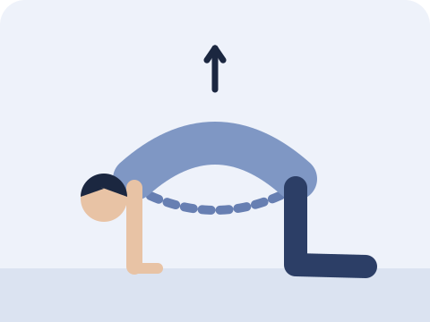
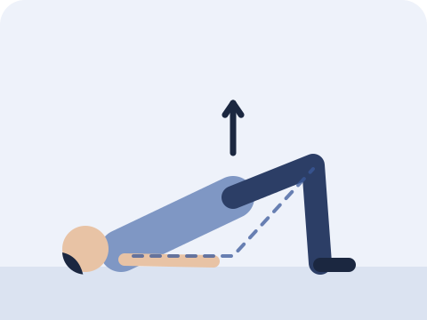
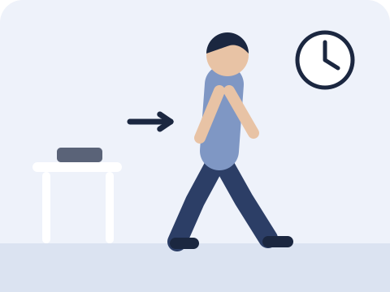

坐了一整天，站起來時腰又硬又痛？這篇文章會講解上班族常見的腰痛，以及三個簡單動作。
簡單答案大部分腰痛找不到單一的嚴重原因，指引稱為「非特異性腰痛」，而且多數會逐漸改善。指引建議盡量保持日常活動和運動，避免長時間卧床；大部分情況亦不需要即時照 X 光或磁力共振。如出現大小便失控、下體附近麻痺或雙腳無力，請立即求醫。
為甚麼會腰痛？
大部分腰痛找不到單一、明確的結構問題，指引會稱為「非特異性腰痛」。
長時間維持同一個坐姿，可能令腰背感到僵硬和疲勞。
腰痛時，適量活動通常比卧床休息好。
研究比較「卧床休息」和「保持活動」兩種建議，發現急性腰痛人士保持活動，痛楚和活動能力有輕微改善。
指引亦指出，大部分腰痛不需要即時照 X 光或磁力共振；醫生會在懷疑有嚴重問題時才安排。
三個簡單動作
選一些做得舒服、可以持續做的動作，以不令痛楚明顯加劇為原則。以下次數只是起步建議。

貓牛式
雙手雙膝跪在地上，慢慢把背部向上拱起，再慢慢放鬆向下。
慢慢做｜10 次

橋式
仰卧，雙膝屈曲，雙腳踏地，慢慢把臀部抬起，再慢慢放下。
停 2 秒｜10 次

起身走動
每隔一段時間站起來走走，例如去倒水或去洗手間。這是一個實用提示，並不是研究證實的固定時間。
大約每 30 分鐘
做的時候要注意
- 動作要慢，在舒服的範圍內做。
- 如做的時候痛楚明顯加劇，請停止。
- 盡量保持日常活動，按情況逐步增加。
甚麼情況應立即求醫？
- 大小便失控，或小便困難
- 下體附近或大腿內側麻痺
- 雙腳無力，或麻痺不斷加劇
- 發燒，或嚴重受傷（例如高處墮下）後腰痛
- 原因不明的體重下降
如四星期後仍未改善，或腰痛伴隨腳痛、腳麻，亦請諮詢醫生或物理治療師。
常見問題
腰痛應該卧床休息嗎？
一般不建議長時間卧床。研究發現，急性腰痛人士保持活動，痛楚和活動能力有輕微改善。可按痛楚調整活動量。
腰痛一定要照 X 光或磁力共振嗎？
大部分情況不需要即時照。指引建議在懷疑有嚴重問題時才安排影像檢查，由醫生按情況決定。
哪一種運動最適合腰痛？
指引建議以運動治療處理持續的腰痛。適合的運動因人而異，物理治療師可以按你的情況建議。
參考資料
- Foster NE, et al. Prevention and treatment of low back pain: evidence, challenges, and promising directions. Lancet 2018;391(10137):2368–2383. PubMed
- Oliveira CB, et al. Clinical practice guidelines for the management of non-specific low back pain in primary care: an updated overview. Eur Spine J 2018;27(11):2791–2803. PubMed
- Dahm KT, et al. Advice to rest in bed versus advice to stay active for acute low-back pain and sciatica. Cochrane Database Syst Rev 2010;(6):CD007612. PubMed

高浩維 Anson Ko
註冊物理治療師，於尖沙咀 Amazing Medical 應診。關於我
本文只供一般參考，不能取代專業診斷及治療。如症狀持續或出現警號，請諮詢醫生或物理治療師。